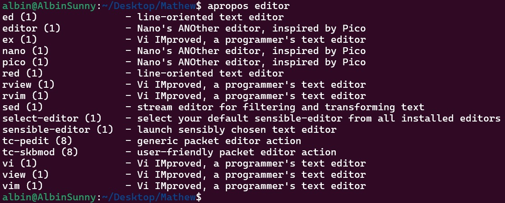
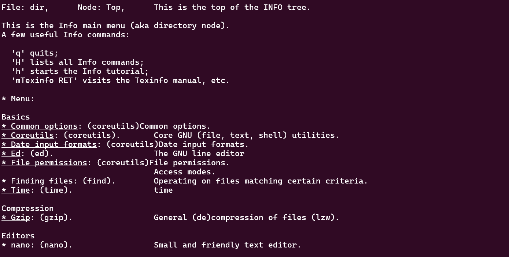
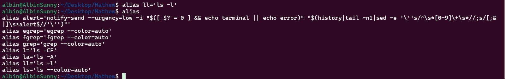
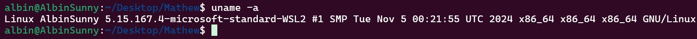
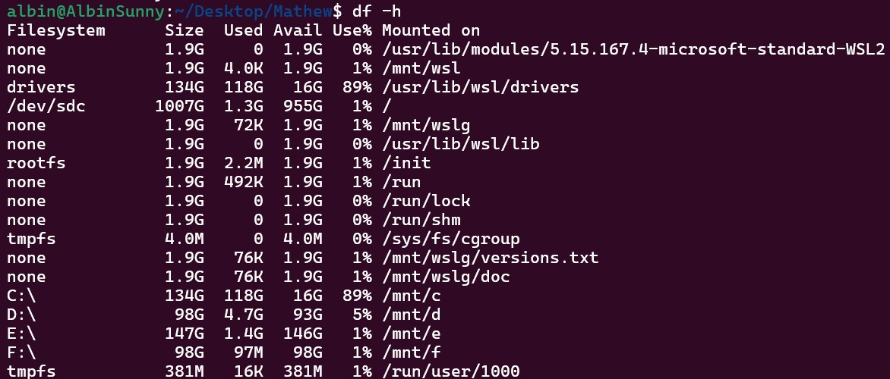
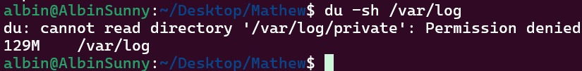
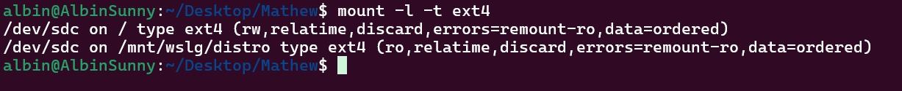
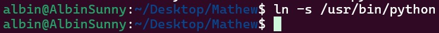
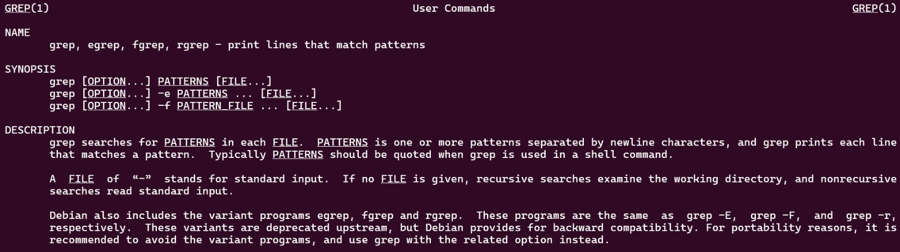

Introduction to Linux
Linux is a robust, versatile, and widely-used operating system that plays a pivotal role in modern computing. It is the backbone of many of the world’s servers, supercomputers, and even mobile devices. Developed in 1991 by Linus Torvalds, the Linux kernel forms the core of various distributions (distros) such as Ubuntu, Fedora, CentOS, and Arch Linux.
One of Linux's key strengths is its open-source nature, which allows developers to contribute, modify, and share their work freely. This has fostered a vibrant community and a plethora of tools and utilities designed to make system management and automation efficient.
Apropos
The apropos command searches the manual pages for commands related to a specific keyword. It's especially useful when you're unsure which command to use for a given task. This command helps save time by narrowing down possible commands relevant to your needs.
- -d: Emit debugging messages. Displays man directories, global path, warnings, etc.
- -v: Print verbose warning messages.
- -e, --exact: Search for an exact match of the keyword in the man page description.
- -w, --wildcard: Use wildcards in the keyword(s) to search both page name and description.
- -a, --and: Require all keywords to match. Returns nothing if any keyword has no match.
- -l, --long: Prevent output from being truncated to the terminal width.
- -C: Use a custom configuration file instead of the default (/manpath).
- -L: Define the locale for the search.
- -m, --systems: Access manual pages from other systems.
- -M, --manpath: Set a custom search path for manual pages.
- -s, --sections, --section: Search specific sections (colon-separated) in the manual pages.
- -?, --help: Display the help list.
Example: apropos network

Info
The info command provides comprehensive documentation about commands and their options. It's an alternative to the man command, offering more detailed explanations. This is particularly helpful for users seeking in-depth information about complex commands.
Example: info [OPTION]... [MENU-ITEM...]
where,
- OPTIONS: Modify the behavior of the command.
- MENU-ITEM: Specify a particular section or node in the documentation to visit.
Key Options for the info command
The info command supports several options that enhance its functionality. Below are the most useful ones:
- -a, --all Use all matching manuals.
- -k, --apropos=STRING Look up STRING in all indices of all manuals.
- -d, --directory=DIR Add DIR to INFOPATH.
- -f, --file=MANUAL Specify the Info manual to visit.
- -h, --help Display help and exit.
- -n, --node=NODENAME Specify nodes in the first visited Info file.
- -o, --output=FILE Output selected nodes to FILE.
- -O, --show-options, --usage Go to the command-line options node.
- -v, --variable VAR=VALUE Assign VALUE to the Info variable VAR.
- --version Display version information and exit.
- -w, --where, --location Print the physical location of the Info file.

Alias
With alias, you can create custom shortcuts for frequently used commands. This saves time and reduces typing errors, especially when dealing with long or complex commands.
Example: alias ll='ls -l'

Uname
The uname command displays system information, such as the operating system name, version, and architecture. This is crucial for understanding the environment you are working in, especially during troubleshooting.
Options avaliable ‘uname’ Command in Linux
-a or --all: Displays all available information.
-s or --kernel-name: Shows the kernel name.
-n or --nodename: Displays the network (domain) name of the machine.
-r or --kernel-release: Shows the kernel release.
-v or --kernel-version: Displays the kernel version.
-m or --machine: Shows the machine hardware name.
-p or --processor: Displays the processor type or “unknown.”
-i or --hardware-platform: Shows the hardware platform or “unknown.”
-o or --operating-system: Displays the operating system.
Example: uname -a

Df
The df command shows disk space usage for file systems on your system. Use the -h flag for human-readable sizes. This command is particularly useful for monitoring disk usage on servers or diagnosing storage-related issues.
Options Available in `df` command in Linux
‘-a’ or ‘–all’: Includes pseudo, duplicate, and inaccessible file systems in the output.
‘-B ’ or ‘–block-size=’: Scales sizes by SIZE before printing them.
‘-h’ or ‘–human-readable’: Prints sizes in a human-readable format using power of 1024.
‘-H’ or ‘–si’: Prints sizes in a human-readable format using power of 1000.
‘-i’ or ‘–inodes’: Lists inode information instead of block usage.
‘-l’ or ‘–local’: Limits listing to local file systems.
‘-P’ or ‘–portability’: Uses POSIX output format for better portability.
‘–sync’: Invokes sync before getting usage info.
‘–total’: Elides all entries insignificant to available space and produces a grand total.
‘-t ’ or ‘–type=’: Limits listing to file systems of type TYPE.
‘-T’ or ‘–print-type’: Prints file system type
Example: df -h

Du
The du command estimates file or directory space usage. Combine it with -sh for a summary in human-readable format. This is helpful for identifying large files or directories consuming significant storage.
Options Available in `du` command in Linux
-0, –null: end each output line with NULL
-a or –all: Displays disk usage information for all files and directories, including hidden ones.
–apparent-size: print apparent sizes, rather than disk usage
-B, –block-size=SIZE: scale sizes to SIZE before printing on console
-c or –total: Shows the total disk usage in addition to individual usage for directories and files.
-d, –max-depth=N: print total for directory only if it is N or fewer levels below command line argument
-h or –human-readable: Displays sizes in human-readable format, using units such as KB, MB, GB, etc. This option makes it easier to interpret the disk usage information.
-S, -separate-dirs: for directories, don’t include size of subdirectories
-s or –summarize: Provides a summary of the disk usage for the specified directory or file, without displaying individual usage details for subdirectories.
–time: show time of last modification of any file or directory
–exclude: Excludes specific directories or files from disk usage calculation based on patterns or names.
Example: du -sh /path/to/directory

Mount
The mount command is used to attach a file system to a directory. It's commonly used to access external drives. Knowing how to mount and unmount devices is essential for managing removable media.
Options Available in `mount` command in Linux
l : Lists all the file systems mounted yet.
h : Displays options for command.
V : Displays the version information.
a : Mounts all devices described at /etc/fstab.
t : Type of filesystem device uses.
T : Describes an alternative fstab file.
r : Read-only mode mounted.
Example: mount -l -t ext4

Ln
The ln command creates links between files. Use the -s option for symbolic links (shortcuts). This is useful for creating easily accessible references to important files or directories.
Example: ln [OPTION]... [-T] TARGET LINK_NAME (1st form)
ln [OPTION]... TARGET... DIRECTORY (2nd form)
ln [OPTION]... -t DIRECTORY TARGET... (3rd form)

Man
The man command displays the manual pages for other commands. It's essential for learning about options and usage, especially when using unfamiliar commands.
Example: man ls
